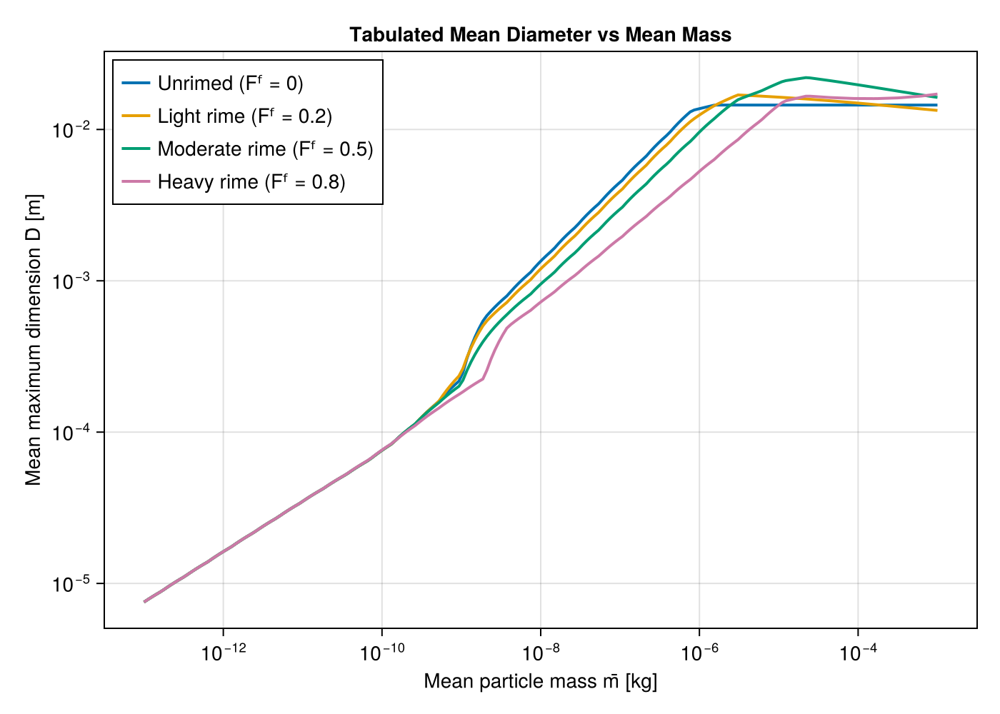
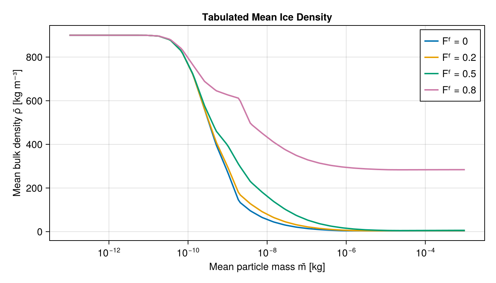
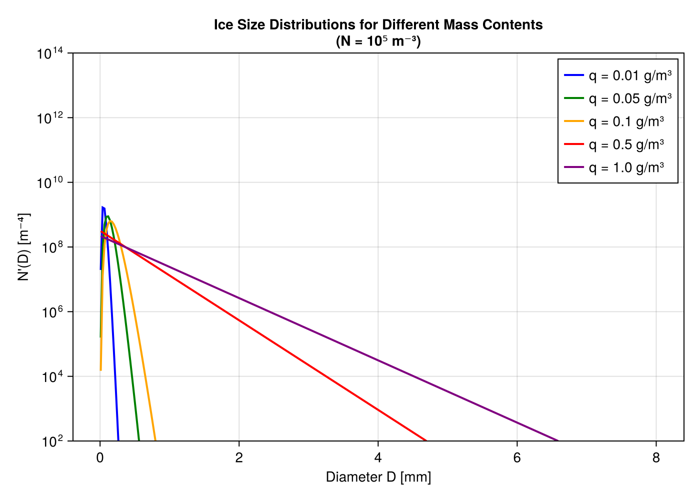
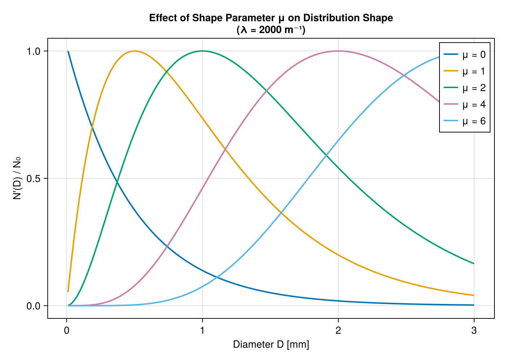
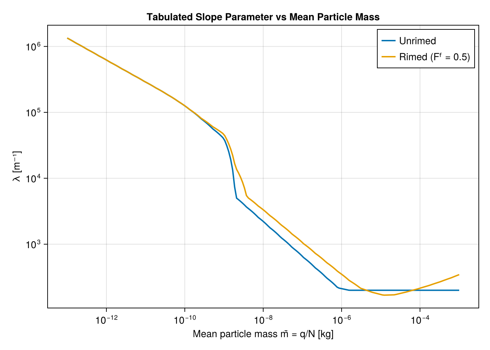
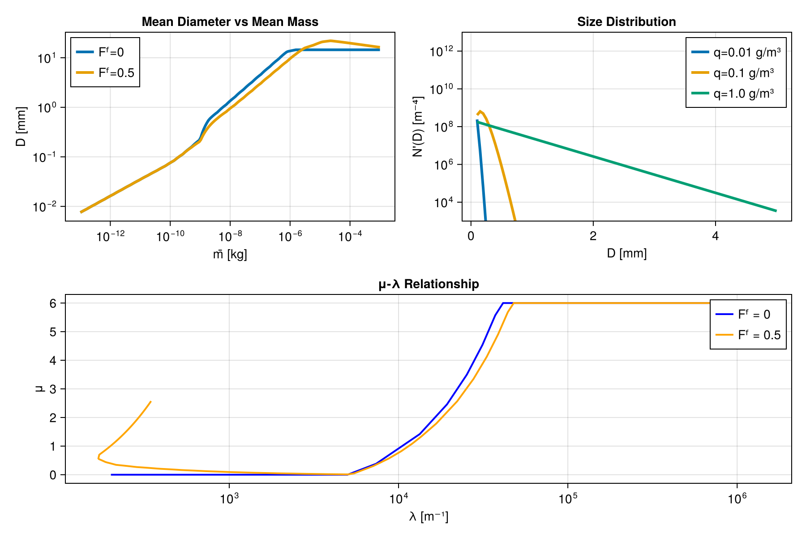

Predicted Particle Properties (P3): Usage
This page shows how to construct and use Breeze's P3 microphysics scheme, and works through visual examples of the particle properties and size distributions it tabulates. For the underlying physics, see Predicted Particle Properties (P3): Theory.
Quick Start
using Breeze# Create a P3 scheme with default parametersmicrophysics = PredictedParticlePropertiesMicrophysics()PredictedParticlePropertiesMicrophysics
├── ρʷ: 1000.0 kg/m³
├── qmin: 1.0e-14 kg/kg
├── ice: IceProperties
├── rain: RainProperties
├── cloud: CloudDropletProperties
├── process_rates: ProcessRateParameters
├── negative_moisture_correction: SpeciesBorrowing(vertical_borrowing = nothing)
├── aerosol: nothing (prescribed CCN)
└── warm_rain_scheme: KhairoutdinovKogan2000# Access ice propertiesmicrophysics.iceIceProperties
├── ρᶠ: [50.0, 900.0] kg/m³
├── μmax: 20.0
├── IceFallSpeed(ρ₀=0.8258242446735904)
├── IceDeposition()
├── IceBulkProperties(Dmax=0.02, Dmin=2.0e-6)
├── IceCollection(4 integrals)
├── IceLambdaLimiter(2 integrals)
└── IceRainCollection(2 integrals)# Get prognostic field namesprognostic_field_names(microphysics)(:ρqᶜˡ, :ρqʳ, :ρnʳ, :ρqⁱ, :ρnⁱ, :ρqᶠ, :ρbᶠ, :ρqʷⁱ)P3 Examples and Visualization
This section provides worked examples demonstrating P3 microphysics concepts through visualization and analysis.
Every ice-side quantity below is read from the P3 lookup tables, which is exactly how the model evaluates them at runtime — see Integral Properties for the table layout. The ice-only block is indexed by $(\log_{10} \bar{m}, F^f, F^l, ρ^f)$, where $\bar{m} = (ρq^i + ρq^{wi})/ρn^i$ is the mean particle mass; the ice–rain collection block adds $\log λ^r$ as a fifth coordinate. The shape parameter $μ$ is a tabulated output of the ice-only block, not one of its coordinates.
The examples illustrate key concepts from the P3 papers:
- Mass-diameter relationships from Morrison & Milbrandt (2015a)
- Size distribution from Morrison & Milbrandt (2015a) and Heymsfield (2003)
- μ-λ relationship from Morrison & Milbrandt (2015a) Eq. 27
Ice Particle Property Explorer
Let's explore how ice particle properties vary with mean mass and riming state.
using Breezeusing Breeze.Microphysics.PredictedParticlePropertiesusing CairoMakie# The default constructor reads the P3 ASCII lookup tables# (downloaded automatically on first use).p3 = PredictedParticlePropertiesMicrophysics()bulk = p3.ice.bulk_properties# Mean particle mass axis, spanning most of the tabulated range.m̄ = 10 .^ range(-13, -3, length=200)log_m̄ = log10.(m̄)# Use dry ice for the plots below.Fˡ = 0.0Mean Diameter versus Mean Mass
fig = Figure(size=(700, 500))ax = Axis(fig[1, 1], xlabel = "Mean particle mass m̄ [kg]", ylabel = "Mean maximum dimension D̄ [m]", xscale = log10, yscale = log10, title = "Tabulated Mean Diameter vs Mean Mass")for (Fᶠ, ρᶠ, label) in [(0.0, 400.0, "Unrimed (Fᶠ = 0)"), (0.2, 400.0, "Light rime (Fᶠ = 0.2)"), (0.5, 500.0, "Moderate rime (Fᶠ = 0.5)"), (0.8, 700.0, "Heavy rime (Fᶠ = 0.8)")] D̄ = [bulk.mean_diameter(lm, Fᶠ, Fˡ, ρᶠ) for lm in log_m̄] lines!(ax, m̄, D̄, linewidth=2, label=label)endaxislegend(ax, position=:lt)fig
Riming packs more mass into a particle of a given size, so through the aggregate-to-graupel range — roughly $\bar{m}$ from $10^{-8}$ to $10^{-6}$ kg — a rimed distribution has the smaller mean dimension, and the separation widens with size.
That ordering is not universal, and the plot shows where it breaks down. Below about $10^{-10}$ kg every curve collapses onto the solid-ice sphere, where morphology cannot matter. At the largest tabulated masses the unrimed curve flattens while the rimed ones keep growing, so the ordering reverses.
Bulk Density and the Riming Regimes
fig = Figure(size=(700, 400))ax = Axis(fig[1, 1], xlabel = "Mean particle mass m̄ [kg]", ylabel = "Mean bulk density ρ̄ [kg m⁻³]", xscale = log10, title = "Tabulated Mean Ice Density")for (Fᶠ, ρᶠ, label) in [(0.0, 400.0, "Fᶠ = 0"), (0.2, 400.0, "Fᶠ = 0.2"), (0.5, 500.0, "Fᶠ = 0.5"), (0.8, 700.0, "Fᶠ = 0.8")] ρ̄ = [bulk.mean_density(lm, Fᶠ, Fˡ, ρᶠ) for lm in log_m̄] lines!(ax, m̄, ρ̄, linewidth=2, label=label)endaxislegend(ax, position=:rt)fig
Small particles are solid ice spheres at $ρ_i$. As the mean mass grows the distribution moves into the aggregate regime and the bulk density falls; riming fills the gaps, pushing the density back toward the graupel value.
Size Distribution Visualization
Effect of Mass Content
The table supplies the gamma-PSD slope $λ$ and shape $μ$ directly. The intercept follows from the number concentration, $N_0 = N λ^{μ+1} / Γ(μ+1)$.
using SpecialFunctions: loggamma# Reconstruct N'(D) from the tabulated (λ, μ) and a prescribed N.function tabulated_psd(p3, q, N, Fᶠ, ρᶠ; Fˡ = 0.0) bulk = p3.ice.bulk_properties log_m̄ = log10(q / N) λ = bulk.slope(log_m̄, Fᶠ, Fˡ, ρᶠ) μ = bulk.shape(log_m̄, Fᶠ, Fˡ, ρᶠ) log_N₀ = log(N) + (μ + 1) * log(λ) - loggamma(μ + 1) return (; λ, μ, log_N₀)endfig = Figure(size=(700, 500))ax = Axis(fig[1, 1], xlabel = "Diameter D [mm]", ylabel = "N'(D) [m⁻⁴]", yscale = log10, title = "Ice Size Distributions for Different Mass Contents\n(N = 10⁵ m⁻³)")D_mm = range(0.01, 8, length=300)D_m = D_mm .* 1e-3N_ice = 1e5for (q, color, label) in [ (1e-5, :blue, "q = 0.01 g/m³"), (5e-5, :green, "q = 0.05 g/m³"), (1e-4, :orange, "q = 0.1 g/m³"), (5e-4, :red, "q = 0.5 g/m³"), (1e-3, :purple, "q = 1.0 g/m³")] psd = tabulated_psd(p3, q, N_ice, 0.0, 400.0) # Evaluate N'(D) = N₀ D^μ e^{-λD} through log N₀: the intercept itself carries units # of m^-(4+μ) and reaches magnitudes that only Float64 can hold. N_D = @. exp(psd.log_N₀ + psd.μ * log(D_m) - psd.λ * D_m) lines!(ax, D_mm, N_D, color=color, linewidth=2, label=label)endaxislegend(ax, position=:rt)ylims!(ax, 1e2, 1e14)fig
Higher mass content (at fixed number) shifts the distribution toward larger particles.
Shape Parameter Effect
fig = Figure(size=(700, 500))ax = Axis(fig[1, 1], xlabel = "Diameter D [mm]", ylabel = "N'(D) / N₀", title = "Effect of Shape Parameter μ on Distribution Shape\n(λ = 2000 m⁻¹)")D_mm = range(0.01, 3, length=200)D_m = D_mm .* 1e-3λ = 2000.0for μ in [0, 1, 2, 4, 6] N_norm = @. D_m^μ * exp(-λ * D_m) N_norm ./= maximum(N_norm) # Normalize to peak lines!(ax, D_mm, N_norm, linewidth=2, label="μ = $μ")endaxislegend(ax, position=:rt)fig
Higher $μ$ produces a narrower distribution with a more pronounced mode.
Slope Parameter versus Mean Mass
fig = Figure(size=(700, 500))ax = Axis(fig[1, 1], xlabel = "Mean particle mass m̄ = q/N [kg]", ylabel = "λ [m⁻¹]", xscale = log10, yscale = log10, title = "Tabulated Slope Parameter vs Mean Particle Mass")for (Fᶠ, ρᶠ, label) in [(0.0, 400.0, "Unrimed"), (0.5, 500.0, "Rimed (Fᶠ = 0.5)")] λs = [bulk.slope(lm, Fᶠ, Fˡ, ρᶠ) for lm in log_m̄] lines!(ax, m̄, λs, linewidth=2, label=label)endaxislegend(ax, position=:rt)fig
At the same mean mass, rimed particles carry a larger $λ$ (smaller characteristic size), because their higher mass-per-particle is reached with smaller particles.
Summary Visualization
fig = Figure(size=(900, 600))# Mean diameter (top left)ax1 = Axis(fig[1, 1], xlabel = "m̄ [kg]", ylabel = "D̄ [mm]", xscale = log10, yscale = log10, title = "Mean Diameter vs Mean Mass")for (Fᶠ, ρᶠ, label) in [(0.0, 400.0, "Fᶠ=0"), (0.5, 500.0, "Fᶠ=0.5")] D̄ = [bulk.mean_diameter(lm, Fᶠ, Fˡ, ρᶠ) * 1e3 for lm in log_m̄] lines!(ax1, m̄, D̄, label=label)endaxislegend(ax1, position=:lt)# Size distribution (top right)ax2 = Axis(fig[1, 2], xlabel = "D [mm]", ylabel = "N'(D) [m⁻⁴]", yscale = log10, title = "Size Distribution")D_mm = range(0.1, 5, length=100)D_m = D_mm .* 1e-3for q in [1e-5, 1e-4, 1e-3] psd = tabulated_psd(p3, q, 1e5, 0.0, 400.0) N_D = @. exp(psd.log_N₀ + psd.μ * log(D_m) - psd.λ * D_m) lines!(ax2, D_mm, N_D, label="q=$(q*1e3) g/m³")endylims!(ax2, 1e3, 1e13)axislegend(ax2, position=:rt)# μ-λ relationship (bottom)ax4 = Axis(fig[2, 1:2], xlabel = "λ [m⁻¹]", ylabel = "μ", xscale = log10, title = "μ-λ Relationship")for (Fᶠ, ρᶠ, label, color) in [(0.0, 400.0, "Fᶠ = 0", :blue), (0.5, 500.0, "Fᶠ = 0.5", :orange)] λs = [bulk.slope(lm, Fᶠ, Fˡ, ρᶠ) for lm in log_m̄] μs = [bulk.shape(lm, Fᶠ, Fˡ, ρᶠ) for lm in log_m̄] lines!(ax4, λs, μs, linewidth=2, color=color, label=label)endaxislegend(ax4, position=:rt)fig
This figure summarizes the key relationships in P3:
- Top left: Mean dimension grows with mean mass, and shrinks with riming through the aggregate-to-graupel range (with the caveats noted above)
- Top right: Size distribution shifts with mass content
- Bottom: Shape parameter μ increases with λ up to a maximum